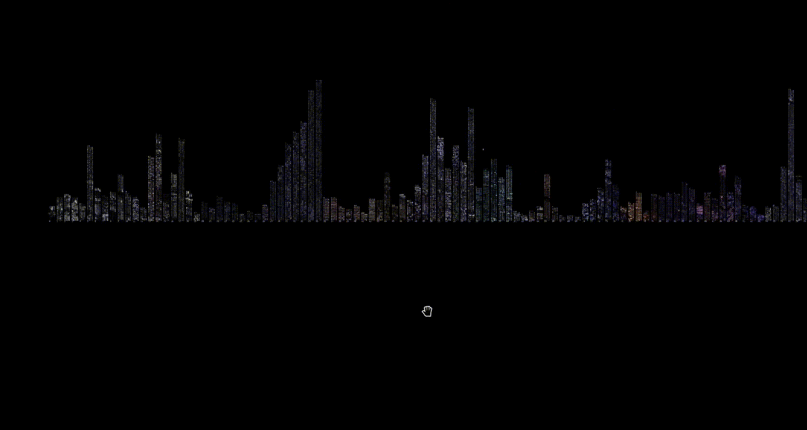
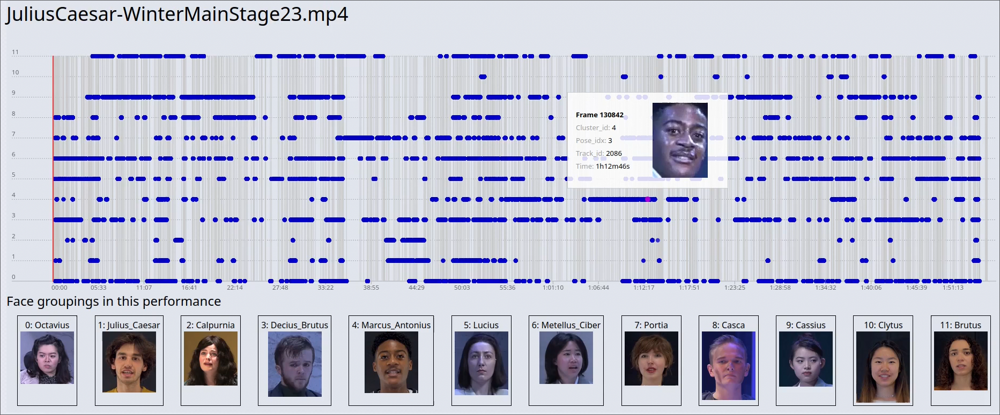

MIME employs machine learning and computer vision to analyze directorial styles and other aspects of theater performances through the lens of pose and action recognition. By applying these techniques to video recordings of theatrical performances, we compare multiple performances per director to identify distinctive patterns in choreography and staging. Our approach combines distant and close viewing methodologies, allowing for a nuanced understanding of theatrical gestures and movements. By comparing different directors’ uses of pose, we aim to quantify aspects of the elusive concept of directorial style. This interdisciplinary project bridges gaps between performing arts, computer science and digital humanities, offering computational insights into theatrical analysis and refining our understanding of directorial signatures in live performance.


@incollection{10.63744@GxQbSDPPyqvL,
title = {Stylistic Analyses of Human Pose in Theatrical Performances: Computational and Historical Frameworks},
author = {Peter Broadwell and Michael Rau and Simon Wiles},
year = {2025},
booktitle = {Computational Humanities Research 2025},
publisher = {Anthology of Computers and the Humanities},
pages = {1481--1492},
editor = {Taylor Arnold and Margherita Fantoli and Ruben Ros},
doi = {10.63744/GxQbSDPPyqvL}
}